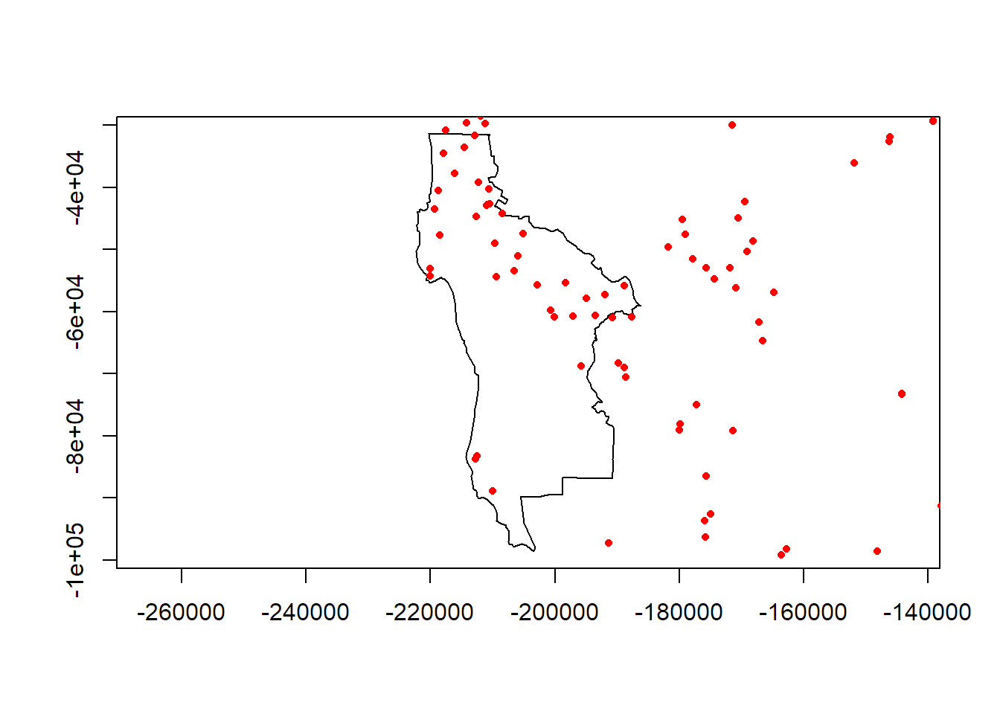

Spatial Analysis with R:
Exercise 6: Spatial Data Operations
Spring 2018
Instructions
Download the GitHub repo.
Create a new R script in RStudio (File → New File → R Script).
Copy the questions below (all of which begin with the # character so RStudio will interpret them as a comment) into your script. Under each question, write R code. Run each line of R code as you enter it (press the Run button or ctrl+enter) to make sure it works.
Remember to save your script periodically to avoid losing work if RStudio crashes.
If you get stuck, click on the 'hint' link, or the question number to see the answer. Click again to hide.
If you have any questions or problems, please feel free to email the instructor.
### IMPORT COUNTY BOUNDARIES
# 1. The exercises/data directory has a Shapefile called ca_counties_census. Bring it into R and
# determine if they are projected.
library(rgdal)
shapefile_dir <- "data"
file.exists(shapefile_dir)## [1] TRUEca_cnty_prj <- rgdal::readOGR(shapefile_dir, "ca_counties_census")## OGR data source with driver: ESRI Shapefile
## Source: "data", layer: "ca_counties_census"
## with 58 features
## It has 13 fields
## Integer64 fields read as strings: ALAND AWATER POP2010 POP2011 POP2012 POP2013 POP2014## Warning in rgdal::readOGR(shapefile_dir, "ca_counties_census"): Z-dimension
## discardedclass(ca_cnty_prj)## [1] "SpatialPolygonsDataFrame"
## attr(,"package")
## [1] "sp"ca_cnty_prj@proj4string## CRS arguments:
## +proj=aea +lat_1=34 +lat_2=40.5 +lat_0=0 +lon_0=-120 +x_0=0
## +y_0=-4000000 +datum=NAD83 +units=m +no_defs +ellps=GRS80
## +towgs84=0,0,0Yes, the county boundaries are projected. We can tell the data are projected because the units meters.
# 2. The exercises/data directory has a csv file called ca_celltowers.csv. Import it into R. Which
# columns contain the longitude and latitude in decimal degrees?
cell_towers_df <- read.csv("data/ca_celltowers.csv")
head(cell_towers_df)## FID LICENSEE CALLSIGN LOCNUM LAT_DMS LATDIR
## 1 0 NEW CINGULAR WIRELESS PCS, LLC KNKA529 1 37,0,9 N
## 2 1 NEW CINGULAR WIRELESS PCS, LLC KNKA529 9 36,58,40 N
## 3 2 NEW CINGULAR WIRELESS PCS, LLC KNKA529 10 36,59,31 N
## 4 3 NEW CINGULAR WIRELESS PCS, LLC KNKA529 11 36,56,24 N
## 5 4 NEW CINGULAR WIRELESS PCS, LLC KNKA529 12 36,54,40 N
## 6 5 NEW CINGULAR WIRELESS PCS, LLC KNKA529 13 36,55,59 N
## LON_DMS LONDIR LOCADD LOCCITY LOCCOUNTY
## 1 122,3,8 W 1156 HIGH ST SANTA CRUZ SANTA CRUZ
## 2 121,47,51 W 49 Crow Rd Watsonville SANTA CRUZ
## 3 122,3,52 W College Eight, 200 Heller Drive Santa Cruz SANTA CRUZ
## 4 121,50,3 W 1253 Trabing Road Watsonville SANTA CRUZ
## 5 121,45,30 W 15 West Lake Street Watsonville SANTA CRUZ
## 6 121,47,13 W 370 AIRPORT BLVD WATSONVILLE SANTA CRUZ
## LOCSTATE NEPA QZONE TOWREG SUPSTRUC ALLSTRUC STRUCTYPE LIC_ID LONG
## 1 CA N NA NA 30.8 42.1 TOWER 11518 -122.0522
## 2 CA N NA 1057141 32.0 32.0 POLE 11518 -121.7975
## 3 CA N NA NA 13.4 14.6 B 11518 -122.0644
## 4 CA N NA 1211537 15.2 17.1 POLE 11518 -121.8342
## 5 CA N NA NA 22.6 25.3 B 11518 -121.7583
## 6 CA N NA 1057387 33.8 37.5 TOWER 11518 -121.7869
## LAT
## 1 37.0025
## 2 36.9778
## 3 36.9919
## 4 36.9400
## 5 36.9111
## 6 36.9331It looks like the LONG and LAT columns contain decimal degrees.
# 3. Create a SpatialPointsDataFrame for the cell towers. For the CRS, use WGS84 geographic coordinates.
library(sp)
cell_towers_spdf_ll <- SpatialPointsDataFrame(coords=cell_towers_df[ ,c("LONG", "LAT")], data=cell_towers_df, proj4string = CRS("+init=epsg:4326"))
plot(cell_towers_spdf_ll)
# 4. Project the cell towers into the same projection system as the county boundaries.
cell_towers_spdf_prj <- sp::spTransform(cell_towers_spdf_ll, ca_cnty_prj@proj4string)
summary(cell_towers_spdf_prj)## Object of class SpatialPointsDataFrame
## Coordinates:
## min max
## LONG -355202.8 536585.1
## LAT -642326.5 446717.2
## Is projected: TRUE
## proj4string :
## [+proj=aea +lat_1=34 +lat_2=40.5 +lat_0=0 +lon_0=-120 +x_0=0
## +y_0=-4000000 +datum=NAD83 +units=m +no_defs +ellps=GRS80
## +towgs84=0,0,0]
## Number of points: 1227
## Data attributes:
## FID LICENSEE
## Min. : 0.0 NEW CINGULAR WIRELESS PCS, LLC :413
## 1st Qu.: 306.5 GTE MOBILNET OF CALIFORNIA LIMITED PARTNERSHIP:168
## Median : 613.0 SACRAMENTO VALLEY LIMITED PARTNERSHIP :102
## Mean : 613.0 Los Angeles SMSA Limited Partnership : 93
## 3rd Qu.: 919.5 FRESNO MSA LIMITED PARTNERSHIP : 91
## Max. :1226.0 CALIFORNIA RURAL SERVICE AREA #1, INC. : 57
## (Other) :303
## CALLSIGN LOCNUM LAT_DMS LATDIR LON_DMS
## KNKA228:113 Min. : 1.00 35,55,33: 5 N:1227 119,48,47: 4
## KNKA341:104 1st Qu.: 6.00 38,39,22: 4 122,36,57: 4
## KNKA209: 93 Median :12.00 32,45,52: 3 117,12,2 : 3
## KNKA351: 44 Mean :20.74 34,53,17: 3 117,31,27: 3
## KNKN346: 43 3rd Qu.:24.50 35,24,4 : 3 117,42,30: 3
## KNKA405: 37 Max. :99.00 35,34,43: 3 118,58,13: 3
## (Other):793 (Other) :1206 (Other) :1207
## LONDIR
## W:1227
##
##
##
##
##
##
## LOCADD
## South Mt St. Helena, End of Mt. St. Helena Road (St. Helena South: 3
## 1.0 miles S of Julian Wash, Township 13 S, Range 20 E : 2
## 1.3 MI N OF HWY 58 NEAR THE CORNER OF BITTERWATER : 2
## 1000 Box Canyon Road : 2
## 1160 S LAKE AVE : 2
## 12016 ROAD 16 : 2
## (Other) :1214
## LOCCITY LOCCOUNTY LOCSTATE NEPA
## SAN DIEGO : 34 SAN DIEGO :126 CA:1227 : 17
## San Diego : 22 KERN : 70 N:1200
## SAN FRANCISCO: 19 FRESNO : 67 Y: 10
## FRESNO : 11 SAN BERNARDINO: 44
## Fresno : 9 LOS ANGELES : 43
## MADERA : 8 SAN JOAQUIN : 40
## (Other) :1124 (Other) :837
## QZONE TOWREG SUPSTRUC ALLSTRUC
## Mode:logical Min. :1000020 Min. : 0.00 Min. : 0.00
## NA's:1227 1st Qu.:1014940 1st Qu.: 0.00 1st Qu.: 0.00
## Median :1018704 Median : 19.80 Median : 9.20
## Mean :1059763 Mean : 44.08 Mean : 18.35
## 3rd Qu.:1055733 3rd Qu.: 38.05 3rd Qu.: 32.95
## Max. :1270777 Max. :7992.00 Max. :124.60
## NA's :1007
## STRUCTYPE LIC_ID LONG LAT
## :581 Min. :11518 Min. :-124.2 Min. :32.20
## TOWER :234 1st Qu.:12102 1st Qu.:-121.8 1st Qu.:34.80
## POLE :174 Median :12298 Median :-120.4 Median :37.08
## MAST :141 Mean :12394 Mean :-120.1 Mean :36.73
## B : 53 3rd Qu.:12742 3rd Qu.:-118.6 3rd Qu.:38.22
## BANT : 13 Max. :13433 Max. :-114.2 Max. :41.98
## (Other): 31# 5. Plot the cell tower locations on top of the county boundaries.
plot(ca_cnty_prj, axes=TRUE, asp=1)
plot(cell_towers_spdf_prj, add=TRUE, col="red", pch=16, cex=0.5)
# 6. Select a county of your choice, and use an attribute query to save the boundary of that county as a
# new SpatialPolygonDataFrame. Plot it, and then plot the cell towers on top.
idx <- sample(1:nrow(ca_cnty_prj), size=1)
idx## [1] 51random_county <- ca_cnty_prj[idx,]
plot(random_county, axes=TRUE, asp=TRUE)
plot(cell_towers_spdf_prj, add=TRUE, col="red", pch=16, cex=0.7)
# 7. Save the projected cell towers and selected county boundary to disk so they can be loaded for a
# future exercise.
save(cell_towers_spdf_prj, file="cell_towers_prj.RData")
save(random_county, file="county_bnd_one.RData")